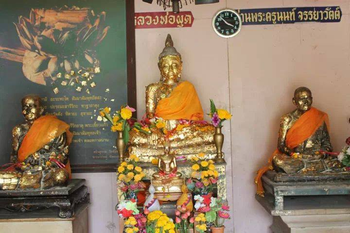
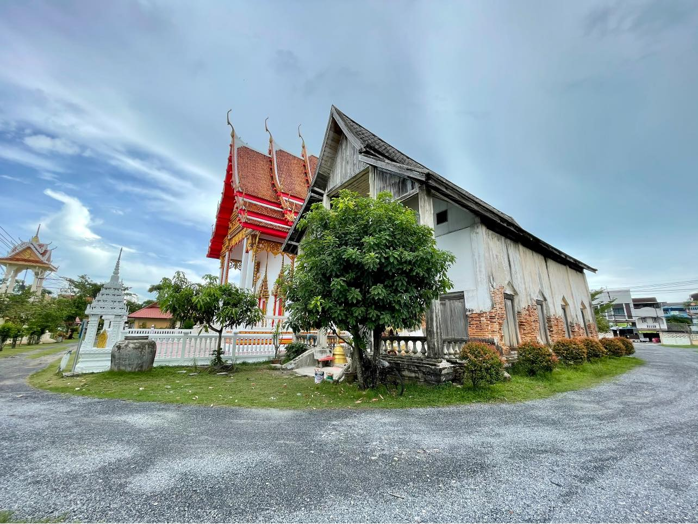
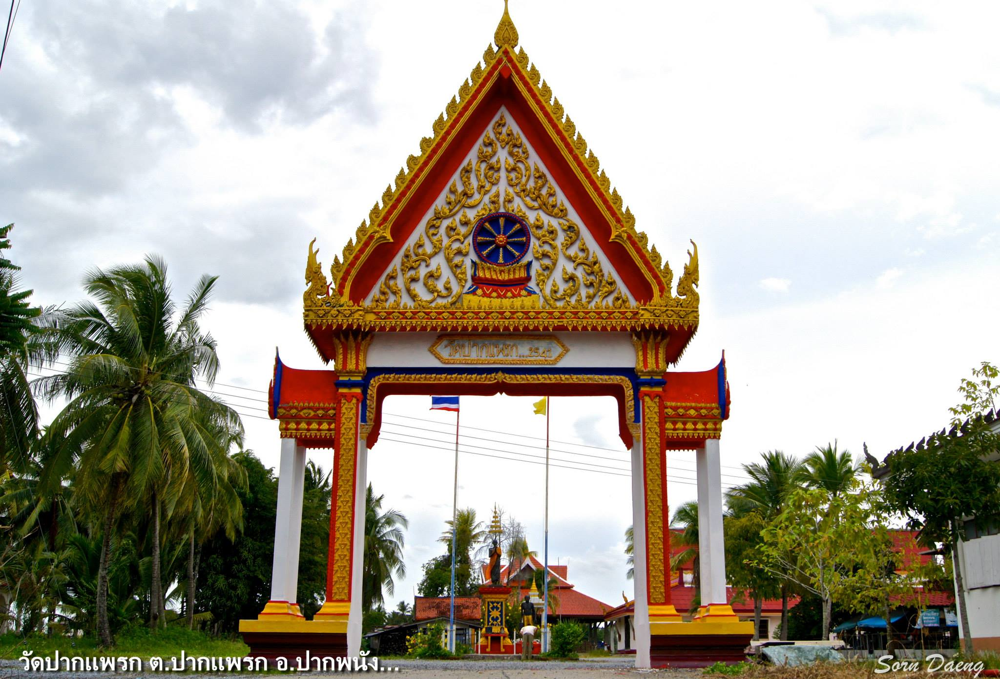
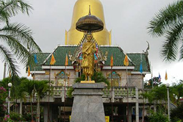
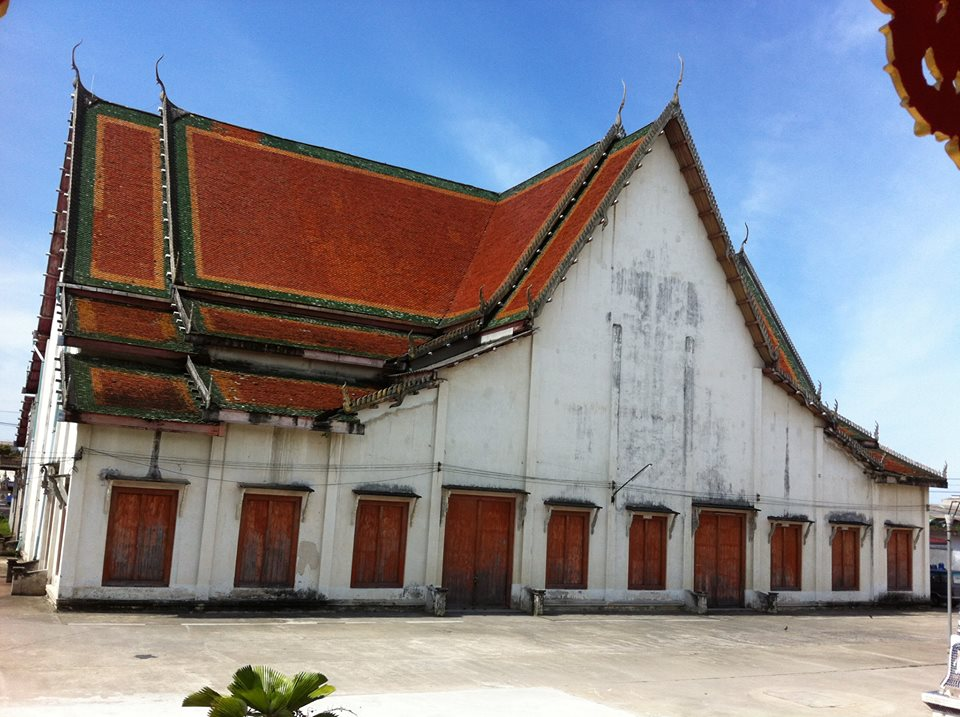

วัด
1.วัดนันทาราม

รูปภาพจาก : thailandtourismdirectory
.....เดิมชื่อวัดใต้ อยู่ถนนชายน้ำ ปากพนังฝั่งตะวันออกเป็นวัดที่ประดิษฐานหลวงพ่อผุด พระพุทธรูปหินทรายแดง ศิลปสมัยกรุงศรีอยุธยา ภายในวัดยังได้เก็บรักษาศิวลึงค์องค์ใหญ่องค์หนึ่งพบที่โบราณสถานเขาคา อายุประมาณ 1,200 ปี ในราวศตวรรษที่ 12-14 สลักจากหินปูนและสมบูรณ์ที่สุดเท่าที่พบในภาคใต้
ความน่าสนใจของวัดแห่งนี้คือการเป็นที่ประดิษฐานหลวงพ่อผุด พระพุทธรูปหินทรายแดง ศิลปะสมัยกรุงศรีอยุธยา ที่ทรงคุณค่ายิ่งนัก อีกทั้งภายในวัดยังได้เก็บรักษาศิวลึงค์องค์ใหญ่ที่พบ ณ โบราณสถานเขาคา ซึ่งมีอายุประมาณ 1,200 ปี ในราวศตวรรษที่ 12-14 โดยเป็นศิวลึงค์ที่สลักจากหินปูนและมีสภาพสมบูรณ์ที่สุดเท่าที่พบในภาคใต้
GOOGLE MAP : https://maps.app.goo.gl/Abo7MP7w74WnUpRY7
2.วัดรามประดิษฐ์

รูปภาพจาก : trip.com
.....วัดรามประดิษฐ์ เป็นวัดเก่าแก่ที่อยู่กับอ.ปากพนัง มายาวนาน ในสมัยก่อนเคยถูกปล่อยให้เป็นวัดร้าง แต่ได้รับการบูรณะใหม่ เดิมชื่อวัดใหม่และได้เปลี่ยนชื่อเป็น วัดรามประดิษฐ์ มีองค์พระพุทธรูปปรางค์ห้ามญาติ หน้าโบสถ์หลังเก่า ที่มีอายุยาวนานกว่า 100 ปี ที่ผู้คนจะนิยมมากราบไหว้ขอพรขอความเจริญรุ่งเรืองกัน
เข้ามาในวัดจะพบภาพโบสถ์เก่าและโบสถ์ใหม่อยู่เคียงข้างกันอย่างสวยงาม โบสถ์เก่ามีเขียนว่า 2421 คาดว่าเป็นปีที่สร้าง สภาพยังสวยงามและเก่าแก่มากจริงๆ ภายในมีข้าวของเครื่องใช้ในสมัยก่อนอยู่มากมาย ควรค่าแก่การเก็บรักษาไว้อย่างที่สุด
GOOGLE MAP : https://maps.app.goo.gl/W8S5XngWv58F2F2Q9
3. วัดปากแพรก

รูปภาพจาก : FACEBOOK
.....วัดปากแพรก เป็นวัดเก่าแก่ที่มีประวัติยาวนาน วัดแห่งนี้เป็นวัดประจำตำบล มีเจ้าอาวาสท่านปัจจุบันคือพระครูปิยสีลาธิคุณ(พ่อท่านชัย)ซึ่งท่านเป็นศิษย์สายตรงของพ่อท่านขาว ท่านเจ้าอาวาสรูปก่อน ในช่วงที่พ่อท่านขาวเป็นเจ้าอาวาส ในสมัยนั้นล่ำลือกันเป็นอย่างมาก ว่าพ่อท่านขาวท่านสามารถรักษาคนบ้า ให้หายขาดได้ ด้วยยาสมุนไพรที่ท่านได้คิดค้นเอง ในสมัยนั้นจะมีคนบ้าอยู่เต็มวัดไปหมด แต่แปลกที่คนบ้าเหล่านั้น ไม่เคยทำร้ายชาวบ้านที่เดินทางผ่านไปมาเลย
ในปัจจุบันนี้ วัดปากแพรกเป็นวัดที่เงียบสงบร่มเย็น อยู่ท่ามกลางธรรมชาติที่สวยงามมาก เป็นธรรมชาติจริงๆ
GOOGLE MAP : https://maps.app.goo.gl/1TKWmdFTxAhoQwNN9
4.วัดพระธาตุหรงบน

รูปภาพจาก : lovethailand
.....วัดหรงบน เป็นสถานที่ศักดิ์สิทธิ์ เก่าแก่ ที่เปี่ยมไปด้วยเรื่องราวอันน่าค้นหา โดยวัดแห่งนี้เปรียบเสมือนขุมทรัพย์ทางวัฒนธรรม ที่รอให้ผู้คนมาเรียนรู้ และสัมผัส ซึ่งดึงดูดผู้คนจากทุกสารทิศมาสัมผัสภายในวัด เต็มไปด้วยศาสนสถาน และงานศิลปะล้ำค่า ที่ล้วนมีคุณค่าทางประวัติศาสตร์ และวัฒนธรรม
หัวใจสำคัญของวัดหรงบน คือ "หลวงพ่อเขียว อินฺทมุนี" พระเกจิอาจารย์ผู้มีชื่อเสียงเลื่องลือ โดยในปัจจุบันสรีระสังขารสังขารตั้งอยู่ที่เจดีย์แห่งวัดหรงบนที่ผู้คนต่างหลั่งไหลมากราบไหว้ ขอพร และสัมผัสความศักดิ์สิทธิ์ของท่าน เชื่อกันว่าหลวงพ่อเขียวมีอิทธิฤทธิ์ปาฏิหาริย์ ช่วยให้ผู้คนสมหวังในสิ่งที่ปรารถนา
GOOGLE MAP : https://maps.app.goo.gl/L9p43KXPxYSzgXkN6
5.วัดนาควารี

รูปภาพจาก : thailandtourismdirectory
.....วัดนาควารี มีอายุไม่น้อยกว่า 200 ปี เดิมทีประชาชนจะเรียกว่า "วัดหูล่อง" มีประวัติมาว่า ทางเขตวัดทางด้านทิศใต้มีบางอยู่บางหนึ่ง ปากบางกว้างประมาณ 10 วา ยาว 75 เส้น ปัจจุบันตื้นเขินไปหมด มาสมัยพระยายมราช (บั้น สุขุม) เป็นสมุหเทศาภิบาลมณฑลนครศรีธรรมราช ได้ขุดคลองลัดจากปากเนตร ผ่านเนื้อที่วัดสู่แม่น้ำปากพนัง หลังจากเปิดคลองนี้ (คลองสุขุม) แล้ว วัดหูล่องก็ได้เปลี่ยนเป็น "วัดนาควารี"
GOOGLE MAP : https://maps.app.goo.gl/xdDGWZrsCguN7rpM6